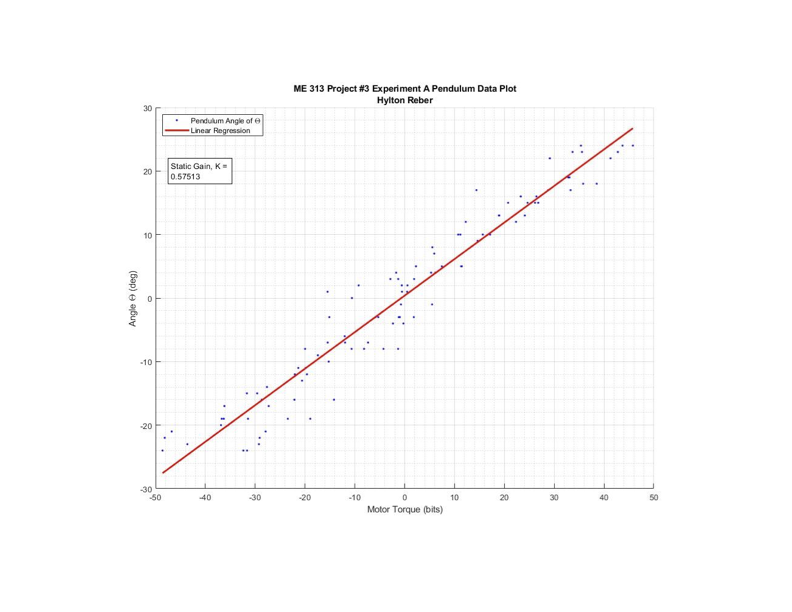
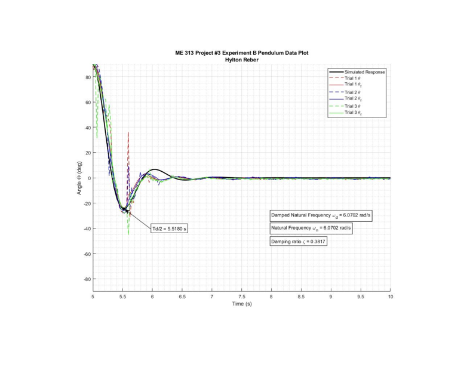
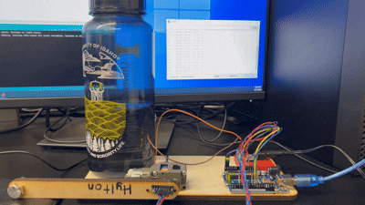
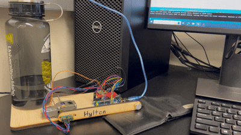

Controls · ME 313
Designed and tuned a closed-loop feedback controller for an Arduino-driven pendulum — fusing accelerometer and gyroscope signals through a complementary filter, then iteratively tuning PD gains to hit a target overshoot response and a fast, smooth settling response.
Approach
This capped a multi-part project: interfacing an IMU over I²C for angle sensing, driving the pendulum's DC gearmotor through an H-bridge circuit, characterizing the system's natural frequency and damping ratio from experimental data, and redefining the angle reference so θ = 0° corresponded to the inverted (balancing) position rather than hanging at rest.
The pendulum's angle was estimated by fusing an accelerometer and a gyroscope using a complementary filter with a weighting constant of c = 0.9. The accelerometer reading is accurate at low frequencies but noisy at high frequencies; the gyroscope integrates quickly but drifts over time. The complementary filter blends them: θ = c · (θ + ω · dt) + (1 − c) · θ_accel — weighting the gyroscope-based estimate heavily for speed and low noise, while periodic accelerometer corrections keep it from drifting over time.
With a stable angle estimate in hand, the controller was tuned in two phases — first to hit a specific overshoot target, then to produce the cleanest, fastest settling response possible.
Target: 50% overshoot. Gains found: kd = 2.725, kp = 0. With only proportional action pulling the pendulum toward the setpoint and no derivative damping, the response naturally overshoots before settling — producing the target 50% overshoot shape.
Target: fast, smooth settling with minimal overshoot. Gains found: kd = 4, kp = 0.225. Adding proportional gain pulls the pendulum toward the setpoint while the higher derivative gain suppresses the oscillation — yielding a crisp step response that settles quickly without ringing.
System Identification
Before tuning gains, the pendulum's dynamics had to be characterized. A second-order transfer function was fit to the experimental step response data by matching the simulated response to observed behavior. The identified parameters were a damping ratio ζ = 0.1, a natural frequency ωn = 14 rad/s, and an adjusted static gain of 0.565. These values were used to build the simulation model that gain tuning was tested against before being applied to the physical rig.

Static gain plot — adjusted static gain = 0.565.

Transient response fit — ζ = 0.1, ωn = 14 rad/s.
Results
Both controllers were tested on the physical pendulum rig. The animations below show the step response for each — the overshoot controller on the left, the tuned controller on the right.

50% Overshoot Response — kd = 2.725, kp = 0.

Tuned Response — kd = 4, kp = 0.225.
Reflection
Most of the non-trivial work in this project happened at the boundary between the simulation and the physical rig. Gain values that produced clean responses in simulation would sometimes cause the motor to jitter or oscillate on the actual hardware — a reminder that a model is always a simplification, and that noise, motor dead-band, and sensor quantization don't show up in a transfer function. Tuning on the physical system meant learning to read what the rig was telling you: whether a twitch was controller instability, electrical noise, or mechanical play. Getting the complementary filter constant right was similarly iterative — too much gyroscope weighting and the angle estimate drifted; too much accelerometer weighting and it was too noisy to control. The final values came from observation, not from first principles alone.